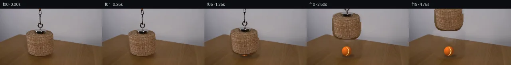

![首帧]()

Round 00
2026-11-05T09:59:45.110461+00:00像素候选变化代码 +209/−0inspection 更新
pixels 6dcc845eece8bbce · code 251d29e74372ca21
查看本轮 generate.py 真实 diff
--- previous/generate.py +++ current/generate.py @@ -0,0 +1,209 @@ +#!/usr/bin/env python3 +"""Generate the 20-frame locked-camera basket-lift demonstration.""" + +from pathlib import Path + +import cv2 +import numpy as np +from PIL import Image, ImageDraw + +from artifact_io import save + + +ROOT = Path(__file__).resolve().parent +W, H = 256, 144 + + +def soft_ellipse(shape, center, radii, blur): + mask = np.zeros(shape, np.uint8) + cv2.ellipse(mask, tuple(map(int, center)), tuple(map(int, radii)), 0, 0, 360, 255, -1) + if blur: + mask = cv2.GaussianBlur(mask, (0, 0), blur) + return mask.astype(np.float32) / 255.0 + + +def make_assembly_mask(src): + """A tight matte for the actual basket, magnet, links, and visible cord.""" + mask = np.zeros((H, W), np.uint8) + body = np.array([ + [82, 53], [118, 53], [128, 56], [133, 61], [136, 69], + [136, 99], [133, 111], [127, 118], [119, 122], [82, 122], + [73, 119], [68, 114], [65, 106], [64, 96], [64, 70], + [67, 62], [73, 57], + ], np.int32) + cv2.fillPoly(mask, [body], 255) + cv2.ellipse(mask, (100, 63), (36, 11), 0, 0, 360, 255, -1) + + # The small links and cord have open interiors, so select their pixels by + # contrast against the nearly uniform wall instead of moving rectangles. + gray = cv2.cvtColor(src, cv2.COLOR_RGB2GRAY) + sat = src.max(axis=2).astype(np.int16) - src.min(axis=2).astype(np.int16) + hardware_roi = np.zeros_like(mask) + hardware_roi[0:59, 90:112] = 1 + contrasting = ((gray < 157) | (sat > 17)).astype(np.uint8) + thin = contrasting * hardware_roi + thin = cv2.morphologyEx(thin, cv2.MORPH_CLOSE, np.ones((2, 2), np.uint8)) + thin = cv2.dilate(thin, np.ones((2, 2), np.uint8), iterations=1) + mask = np.maximum(mask, thin * 255) + + # Keep the magnet's light metal cap, whose tone is close to the wall. + cv2.ellipse(mask, (100, 58), (16, 6), 0, 0, 360, 255, -1) + return cv2.GaussianBlur(mask, (0, 0), 0.48).astype(np.float32) / 255.0 + + +def make_clean_plate(src, assembly_alpha): + """Reconstruct the wall/table that was hidden by the original assembly.""" + plate = src.astype(np.float32) + synth = plate.copy() + + # The rear tabletop edge behind the basket is the continuation of the + # visible line from (49,66) to the right edge. + yy, xx = np.mgrid[0:H, 0:W] + boundary = 58.9 + 0.145 * xx + table = yy >= boundary + + # Texture is sampled from the unoccluded right side in coordinates that + # preserve distance below the receding tabletop edge. + xref = np.clip(xx + 90, 0, W - 1) + yref_table = np.clip(yy + 13, 0, H - 1) + mapped_table = src[yref_table, xref].astype(np.float32) + + # Wall uses a same-row sample; it retains the source's subtle sensor noise + # and lighting gradient instead of creating a flat painted patch. + mapped_wall = src[yy, xref].astype(np.float32) + synth[table] = mapped_table[table] + synth[~table] = mapped_wall[~table] + + # A broad inpaint provides plausible low-frequency continuation. Blend it + # with the edge-aligned texture transfer for a clean but non-uniform plate. + removal = (assembly_alpha > 0.03).astype(np.uint8) * 255 + removal = cv2.dilate(removal, np.ones((7, 7), np.uint8), iterations=1) + inpainted = cv2.inpaint(src, removal, 7, cv2.INPAINT_TELEA).astype(np.float32) + synth = 0.72 * synth + 0.28 * inpainted + + blend = cv2.GaussianBlur(removal, (0, 0), 2.0).astype(np.float32) / 255.0 + blend = blend[..., None] + plate = plate * (1.0 - blend) + synth * blend + return np.clip(plate, 0, 255).astype(np.uint8) … diff truncated; 122 more lines …